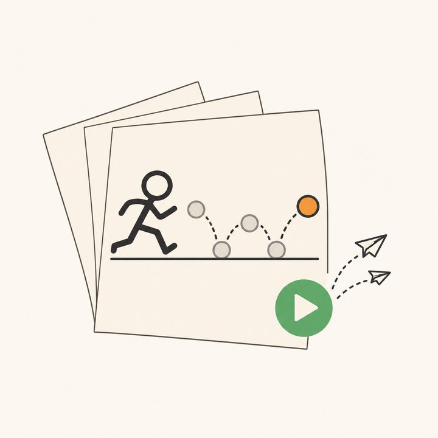

iPhone・iPad・Android のパラパラ漫画
1コマずつ描いて、
すぐ動かす。
1コマずつ絵を描いて、すぐ再生できるパラパラ漫画の帳面です。前のコマが薄く透け、塗りつぶしは線のすき間からはみ出しません。コマの数に制限はなく、描いたアニメは GIF や動画にして自由に使えます。
App Store・Google Play で配信予定買い切りで全部の機能が使えます。アプリ内課金・サブスクリプション・広告・投稿の場はありません。

こんな困りごとのために
コマの数に上限がある
ぱらぱらちょうは買い切りで、コマの数も作品の数も制限がありません。
塗りつぶしがはみ出す
見えている全部のレイヤーの線を境に塗ります。線に小さなすき間があっても、外へはみ出しません。
前のコマが見えない
前のコマ（赤み）と次のコマ（青み）を薄く重ねて、少しずつ動かして描けます。
ペンの太さが毎回戻る
ペンの種類・太さ・色は、アプリを閉じても覚えています。
投稿の場のコメントがこわい
投稿の場はありません。作品は端末の中に置き、送る先は自分で選びます。
作ったアニメを使ってよいか
自分で描いたアニメは自由に使えます。動画のサイトに載せることもできます。
できること
| 描く | えんぴつ・ペン・マーカー・消しゴム・塗りつぶし・筆圧・レイヤー3枚（下書き・線・塗り）・拡大 |
|---|---|
| コマ | 足す・複製・並べかえ・止めの絵（1コマを長く見せる）・前後のコマを透かす |
| 再生 | 1〜30 コマ／秒・くり返し・往復 |
| 書き出し | GIF・動画（mp4）・連番の画像（PNG） |
| データ | iCloud で iPhone と iPad をそろえる・1筆ごとに保存・ゴミ箱（30日）・アカウントなし・解析と広告なし |
使い方・プライバシーポリシー・利用規約もご覧ください。